什么是组件化开发
组件化是一种分而治之的思想：
-
如果我们将一个页面中所有的处理逻辑全部放在一起，处理起来就会变得非常复杂，而且不利于后续的管理以及扩展。
-
但如果，我们讲一个页面拆分成一个个小的功能块，每个功能块完成属于自己这部分独立的功能，那么之后整个页面的管 理和维护就变得非常容易了。
我们需要通过组件化的思想来思考整个应用程序：
- 我们将一个完整的页面分成很多个组件；
- 每个组件都用于实现页面的一个功能块；
- 而每一个组件又可以进行细分；
- 而组件本身又可以在多个地方进行复用；
React 的组件化
组件化是 React 的核心思想，也是我们后续的重点，前面我们封装的 App 本身就是一个组件：
组件化提供了一种抽象，让我们可以开发出一个个独立可复用的小组件来构造我们的应用。 任何的应用都会被抽象成一颗组件树。
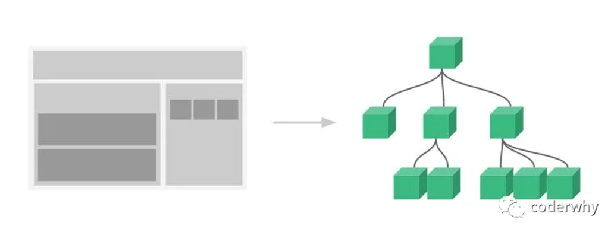
-
组件化思想的应用： 有了组件化的思想，我们在之后的开发中就要充分的利用它。尽可能的将页面拆分成一个个小的、可复用的组件。这样让我们的代码更加方便组织和管理，并且扩展性也更强。
-
React 的组件相对于 Vue 更加的灵活和多样，按照不同的方式可以分成很多类组件：
- 根据组件的定义方式，可以分为：函数组件(Functional Component )和类组件(Class Component)；
- 根据组件内部是否有状态需要维护，可以分成：无状态组件(Stateless Component )和有状态组件(Stateful Component)；
- 根据组件的不同职责，可以分成：展示型组件(Presentational Component)和容器型组件(Container Component)；
这些概念有很多重叠，但是他们最主要是关注数据逻辑和 UI 展示的分离：
- 函数组件、无状态组件、展示型组件主要关注 UI 的展示；
- 类组件、有状态组件、容器型组件主要关注数据逻辑；
- 当然还有很多组件的其他概念：比如异步组件、高阶组件等，我们后续再学习。
类组件
类组件的定义有如下要求：
- 组件的名称是大写字符开头（无论类组件还是函数组件）
- 类组件需要继承自
React.Component - 类组件必须实现
render函数
::: info
在 ES6 之前，可以通过 create-react-class 模块来定义类组件，但是目前官网建议我们使用 ES6 的 class 类定义。
:::
使用 class 定义一个组件：
constructor是可选的，我们通常在constructor中初始化一些数据；this.state中维护的就是我们组件内部的数据；render()方法是class组件中唯一必须实现的方法；
如何编写一个类组件？
-
导入 React.Component
// 1. import { Component } from "react"; // 2. import React from "react"; -
类继承 Component
根据导入的类型继承 Component
// 1. import { Component } from "react"; class APP extends Component {} // 2. import React from "react"; class APP extends React.Component {} -
组件添加
render函数，返回渲染内容根据组件内是否有状态需要维护添加
constructor函数，如果使用到了constructor函数，必须调用super()import { Component } from "react"; export default class APP extends Component { constructor() { super(); this.state = { message: "HHH", }; } render() { const { message } = this.state; return <h2>{message}</h2>; } }
render 函数的返回值
当 render 被调用时，它会检查 this.props 和 this.state 的变化并返回以下类型之一：
-
React 元素：
通常通过 JSX 创建。
例如，
<div />会被 React 渲染为 DOM 节点，<MyComponent />会被 React 渲染为自定义组件； 无论是<div />还是<MyComponent />均为 React 元素。render() { return <h2>HHH</h2>; } // 或者 render() { return <APP/>; } -
数组或 fragments(后续学习)：
使得 render 方法可以返回多个元素。
render() { return [1,2,3]; }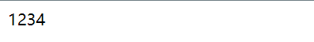
render() { return [ <h1>H</h1>, <h2>HH</h2>, <h3>HHH</h3> ]; }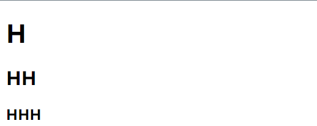
-
Portals(后续学习)：
可以渲染子节点到不同的 DOM 子树中。
-
字符串或数值类型：
它们在 DOM 中会被渲染为文本节点
render() { return "Hello,world"; } // 或者 render() { return 123; } -
布尔类型或
null或undefined：什么都不渲染。
render() { return [1,2,3]; }
函数组件
函数组件是使用 function 来进行定义的函数，只是这个函数会返回和类组件中 render 函数返回一样的内容。
函数组件的特点（当然，后面讲 hooks 的时候就不一样了）：
- 没有生命周期，也会被更新并挂载，但是没有生命周期函数；
- this 关键字不能指向组件实例（因为没有组件实例）；
- 没有内部状态（state）；
我们来定义一个函数组件：
export default function App() {
return <h2>HHH</h2>;
}前面的学习中主要讲解类组件，后面学习 Hooks 时，会针对函数式组件进行更多的学习。
生命周期
从创建到销毁的整个过程被称为生命周期；
React 组件也有自己的生命周期，了解组件的生命周期可以让我们在最合适的地方完成自己想要的功能；
生命周期和生命周期函数的关系：
-
生命周期是一个抽象的概念，在生命周期的整个过程，分成了很多个阶段；
- 比如装载阶段（Mount），组件第一次在 DOM 树中被渲染的过程；
- 比如更新过程（Update），组件状态发生变化，重新更新渲染的过程；
- 比如卸载过程（Unmount），组件从 DOM 树中被移除的过程；
-
React 内部为了告诉我们当前处于哪些阶段，会对我们组件内部实现的某些函数进行回调，这些函数就是生命周期函数：
- 比如实现
componentDidMount函数：组件已经挂载到 DOM 上时，就会回调； - 比如实现
componentDidUpdate函数：组件已经发生了更新时，就会回调； - 比如实现
componentWillUnmount函数：组件即将被移除时，就会回调；
- 比如实现
我们可以在这些回调函数中编写自己的逻辑代码，来完成自己的需求功能；
::: tip 我们谈 React 生命周期时，主要谈的是类的生命周期，因为函数式组件是没有生命周期函数的；（后面我们可以通过 hooks 来模拟一些生命周期的回调） :::
生命周期函数


Constructor
如果不初始化 state 或不进行方法绑定，则不需要为 React 组件实现构造函数。
constructor 中通常只做两件事情：
- 通过给 this.state 赋值对象来初始化内部的 state；
- 为事件绑定实例（this）；
componentDidMount
componentDidMount 在组件被渲染到 DOM（被挂载到 DOM）的时候立即调用。
componentDidMount 中通常进行哪里操作呢？
- 依赖于 DOM 的操作可以在这里进行；
- 在此处发送网络请求就最好的地方；（官方建议）
- 可以在此处添加一些订阅（记得要在 componentWillUnmount 取消订阅）；
componentDidUpdate
componentDidUpdate 会在更新后会被立即调用，首次渲染不会执行此方法。
当组件更新后，可以在此处对 DOM 进行操作；
- 如果你对更新前后的 props 进行了比较，也可以选择在此处进行网络请求；（例如，当 props 未发生变化时，则不会执行网络请求）。
componentWillUnmount
componentWillUnmount 会在组件卸载及销毁之前直接调用。
在此方法中执行必要的清理操作；
- 例如，清除 timer，取消网络请求或清除在 componentDidMount() 中创建的订阅等 ::: tip 每个组件都是一个实例，因此每个组件都有自己的生命周期 :::
不常用生命周期函数
getDerivedStateFromProps
state 的值在任何时候都依赖于 props 时使用；该方法返回一个对象来更新 state；
getSnapshotBeforeUpdate
在 React 更新 DOM 之前回调的一个函数，可以获取 DOM 更新前的一些信息（比如说滚动位置），用来保存一些数据或者快照。该函数的返回值会做为componentDidUpdate的参数
shouldComponentUpdate
该函数返回 true 的时候界面会重新渲染，返回 false 则不会重新渲染
但是我们等待讲性能优化时再来详细讲解；
::: tip 生命周期速查图：https://projects.wojtekmaj.pl/react-lifecycle-methods-diagram/
更详细的生命周期内容：https://zh-hans.react.dev/reference/react/Component :::
组件嵌套
组件之间存在嵌套关系：
-
在之前的案例中，我们只是创建了一个组件 App；
-
如果我们一个应用程序将所有的逻辑都放在一个组件中，那么这个组件就会变成非常的臃肿和难以维护；
-
所以组件化的核心思想应该是对组件进行拆分，拆分成一个个小的组件；再将这些组件组合嵌套在一起，最终形成我们的应用程序；
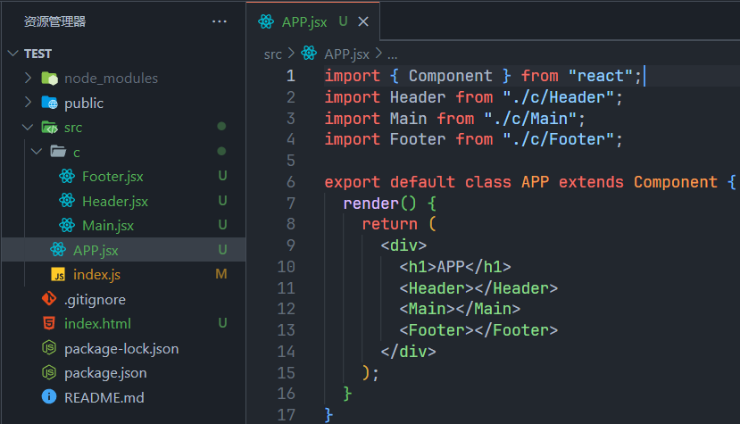
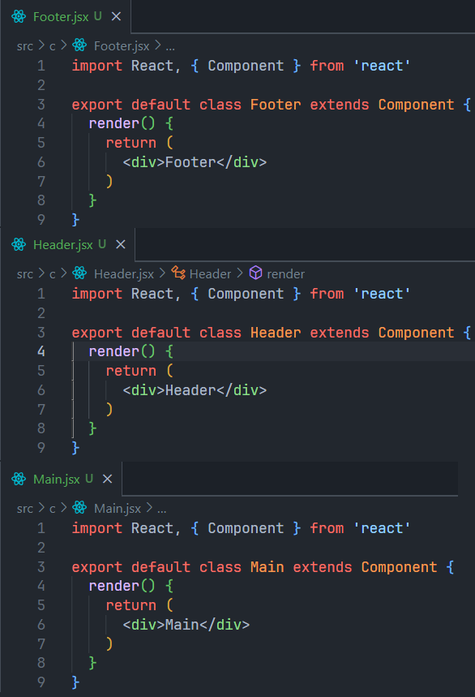
上面的嵌套逻辑如下，它们存在如下关系： App 组件是 Header、Main、Footer 组件的父组件； Main 组件是 Banner、ProductList 组件的父组件；
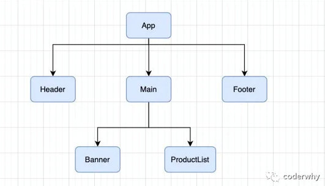
组件间的通信
在开发过程中，我们会经常遇到需要组件之间相互进行通信：
- 比如 App 可能使用了多个 Header，每个地方的 Header 展示的内容不同，那么我们就需要使用者传递给 Header 一些数据，让其进行展示；
- 又比如我们在 Main 中一次性请求了 Banner 数据和 ProductList 数据，那么就需要传递给他们来进行展示；
- 也可能是子组件中发生了事件，需要由父组件来完成某些操作，那就需要子组件向父组件传递事件；
父传子
- 父组件通过 属性=值 的形式来传递给子组件数据；
- 子组件通过 props 参数获取父组件传递过来的数据；
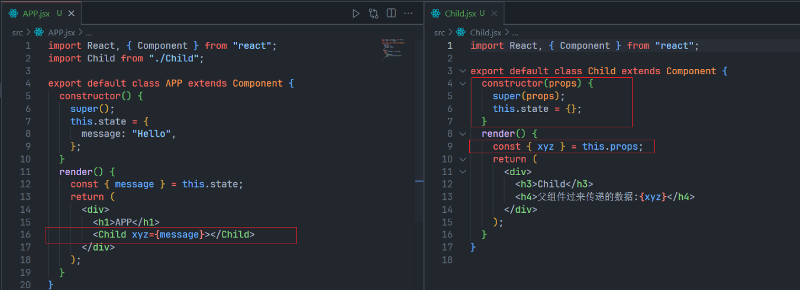
::: tip
constructor(props) {
super(props);
}这段代码的意义就算将 props 保存到内部，大概原理是this.props = props。
如果子组件没有需要维护的数据即只是展示父组件传过来的数据，那么就不用写constructor函数，可以直接在render函数获取到 props。因为组件内部会自动保存。
:::
参数 propTypes
-
对于传递给子组件的数据，有时候我们可能希望进行验证，特别是对于大型项目来说：
-
当然，如果你项目中默认继承了 Flow 或者 TypeScript，那么直接就可以进行类型验证；但是，即使我们没有使用 Flow 或者 TypeScript，也可以通过 prop-types 库来进行参数验证；
::: info Flow 是 FaceBook 开发的，最早 Vue2 进行类型限制也是用的 Flow，虽然 Vue3 已经切换到 TS :::
从 React v15.5 开始，React.PropTypes 已移入另一个包中：prop-types 库
npm install --save prop-types使用 prop-types 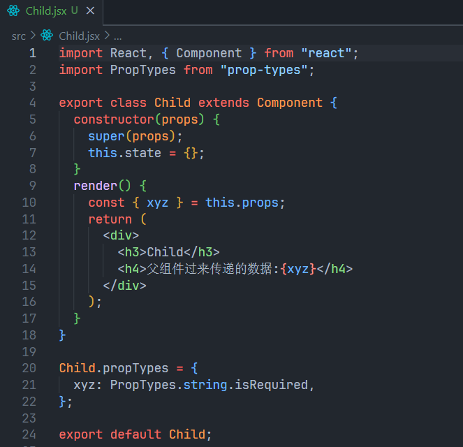
默认参数 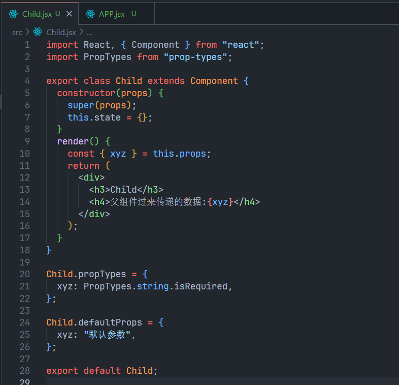
子传父
某些情况，我们需要子组件向父组件传递消息：
- 在 vue 中是通过自定义事件来完成的；
- 在 React 中同样是通过 props 传递消息，只是让父组件给子组件传递一个回调函数，在子组件中调用这个函数即可；
::: details APP.jsx
import React, { Component } from "react";
import Child from "./Child";
export default class APP extends Component {
constructor() {
super();
this.state = {
count: 100,
};
}
changeCount(count) {
this.setState({ count: this.state.count + count });
}
render() {
const { count } = this.state;
return (
<div>
<h1>APP</h1>
<h2>当前计数{count}</h2>
<Child
addClick={(count) => {
this.changeCount(count);
}}
></Child>
</div>
);
}
}:::
::: details Child.jsx
import React, { Component } from "react";
export class Child extends Component {
add(count) {
this.props.addClick(count);
}
render() {
return (
<div>
<button
onClick={() => {
this.add(1);
}}
>
+1
</button>
<button
onClick={() => {
this.add(5);
}}
>
+5
</button>
<button
onClick={() => {
this.add(10);
}}
>
+10
</button>
</div>
);
}
}
export default Child;:::
组件通信案例
效果
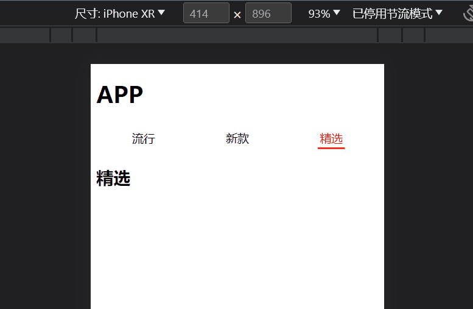
::: details APP.jsx
import React, { Component } from "react";
import TabControl from "./TabControl";
export default class APP extends Component {
constructor() {
super();
this.state = {
titles: ["流行", "新款", "精选"],
tabIndex: 0,
};
}
tabClick(tabIndex) {
this.setState({ tabIndex });
}
render() {
const { titles, tabIndex } = this.state;
return (
<div>
<h1>APP</h1>
<TabControl
titles={titles}
tabIndex={tabIndex}
tabClick={(i) => {
this.tabClick(i);
}}
></TabControl>
<h2>{titles[tabIndex]}</h2>
</div>
);
}
}:::
::: details TabControl.jsx
import React, { Component } from "react";
import "./style.css";
export class TabControl extends Component {
change(index) {
this.props.tabClick(index);
}
render() {
const { titles, tabIndex } = this.props;
return (
<div className="tab">
{titles.map((item, index) => {
return (
<div
className={`item ${index === tabIndex ? "active" : ""}`}
onClick={() => {
this.change(index);
}}
key={item}
>
<span className="text">{item}</span>
</div>
);
})}
</div>
);
}
}
export default TabControl;:::
::: details style.css
.tab {
display: flex;
align-items: center;
height: 40px;
text-align: center;
}
.tab .item {
flex: 1;
}
.tab .item.active {
color: red;
}
.tab .item.active .text {
padding: 3px;
border-bottom: 3px solid red;
}:::
插槽(slot)
在开发中，我们抽取了一个组件，但是为了让这个组件具备更强的通用性，我们不能将组件中的内容限制为固定的 div、span 等等这些元素。
我们应该让使用者可以决定某一块区域到底存放什么内容。
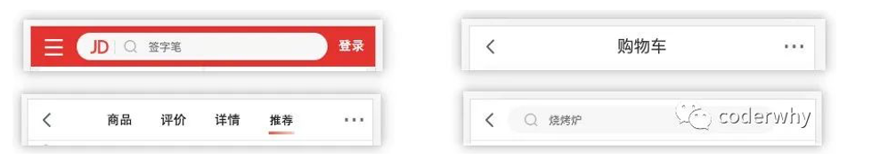
上面这种需求在 Vue 当中有一个固定的做法是通过 slot 来完成的，但是 react 没有插槽该如何实现？
React 对于这种需要插槽的情况非常灵活，有两种方案可以实现：
- 组件的 children 子元素；
- props 属性传递 React 元素；
children 实现
每个组件都可以获取到 props.children：它包含组件的开始标签和结束标签之间的内容。
如果组件开始结束标签之间只有一个标签，则 children 是一个元素；反之有多个标签，则 children 是数组
APP.jsx
import React, { Component } from "react";
import NavBar from "./NavBar";
export default class APP extends Component {
render() {
return (
<NavBar>
<h2>1</h2>
<h2>2</h2>
<h2>3</h2>
</NavBar>
);
}
}NavBar.jsx
import React, { Component } from "react";
export class NavBar extends Component {
render() {
const { children } = this.props;
console.log(children);
return (
<div>
<div>{children[0]}</div>
<div>{children[1]}</div>
<div>{children[2]}</div>
</div>
);
}
}
export default NavBar;::: tip 通过 children 实现的方案虽然可行，但是有一个弊端：通过索引值获取传入的元素很容易出错，不能精准的获取传入的原生 :::
props 实现
通过具体的属性名，可以让我们在传入和获取时更加的精准；
APP.jsx
import React, { Component } from "react";
import NavBar from "./NavBar";
export default class APP extends Component {
render() {
const e1 = <h2>HH</h2>;
const e2 = <h3>HHH</h3>;
const e3 = <h4>HHHH</h4>;
return <NavBar slot1={e1} slot2={e2} slot3={e3} />;
}
}NavBar.jsx
import React, { Component } from "react";
export class NavBar extends Component {
render() {
const { slot1, slot2, slot3 } = this.props;
return (
<div>
<div>{slot1}</div>
<div>{slot2}</div>
<div>{slot3}</div>
</div>
);
}
}
export default NavBar;作用域插槽
有这么一种情况，子组件要显示一个按钮，而这个按钮的标签是由父组件决定的，按钮的内容是由子组件决定的
APP.jsx
import React, { Component } from "react";
import NavBar from "./NavBar";
export default class APP extends Component {
render() {
return (
<NavBar
itemType={<button>Hi,world</button>}
itemType2={(item) => <button>{item}</button>}
/>
);
}
}NavBar.jsx
import React, { Component } from "react";
export default class NavBar extends Component {
render() {
const { itemType, itemType2 } = this.props;
return (
<div>
{/* 1.默认情况下是Hello,world，但是现在不想用span标签，想改用button标签并且里面的内容仍是Hello,world */}
<span>Hello,world</span>
{/* 2.现在通过props修改为button标签，但是button的内容被更改为Hi,world */}
{itemType}
{/* 3.将传入标签改为传入一个返回标签的函数即可，现在标签由父组件决定，而内容由子组件决定*/}
{itemType2("Hello,world")}
</div>
);
}
}非父子组件通信 - Context
非父子组件数据的共享：
- 在开发中，比较常见的数据传递方式是通过 props 属性自上而下（由父到子）进行传递。
- 但是对于有一些场景：比如一些数据需要在多个组件中进行共享（地区偏好、UI 主题、用户登录状态、用户信息等）。
- 如果我们在顶层的 App 中定义这些信息，之后一层层传递下去，那么对于一些中间层不需要数据的组件来说，是一种冗余的操作。
在一层层传递 props 的时候，可以使用展开运算符... 来在 JSX 中传递整个 props 对象。
// 比如给Home组件传入一个info参数
<Home {info} />
// 在HomeProduct组件中不使用这些参数，就可以直接加上 {...this.props}
<HomeProduct {...this.props}/>
// 现在HomeProductItem就可以拿到传递的info参数
<HomeProductItem {...this.props}/>但是，如果层级更多的话，一层层传递是非常麻烦，并且代码是非常冗余的：React 提供了一个 API：Context；
Context 提供了一种在组件之间共享此类值的方式，而不必显式地通过组件树的逐层传递 props；
Context 设计目的是为了共享那些对于一个组件树而言是“全局”的数据，例如当前认证的用户、主题或首选语言；
::: tip 当然 Context 使用起来也是相当繁琐的，所以一般在开发中使用的是 redux :::
Context 相关 API
React.createContext
const Context = React.createContext();- 创建一个需要共享的 Context 对象；
- 如果一个组件订阅了 Context，那么这个组件会从离自身最近的那个匹配的 Provider 中读取到当前的 context 值；
- defaultValue 是组件在顶层查找过程中没有找到对应的 Provider，那么就使用默认值
Context.Provider
<ThemeContext.Provider value={/* 需要共享的值 */}>
</ThemeContext.Provider>- 每个 Context 对象都会返回一个 Provider React 组件，它允许消费组件订阅 context 的变化；
- Provider 接收一个 value 属性，传递给消费组件；
- 一个 Provider 可以和多个消费组件有对应关系；
- 多个 Provider 也可以嵌套使用，里层的会覆盖外层的数据；
- 当 Provider 的 value 值发生变化时，它内部的所有消费组件都会重新渲染；
Class.contextType
将 class 上的 contextType 属性赋值为一个由 React.createContext() 创建的 Context 对象；
这能让你使用 this.context 来消费最近 Context 上的那个值；你可以在任何生命周期中访问到它，包括 render 函数中；
Context.Consumer
由于在函数式组件是没有 contextType 的，因此想要在函数式组件中使用 Context 就要通过Context.Consumer（并不是说类组件不能使用Context.Consumer）。
Context.Consumer需要函数作为子元素；这个函数接收当前的 context 值，返回一个 React 节点；
在多个 Context 需要使用的情况下，也需要使用到这个 API。
如何实现一个 Context
::: info 代码目录结构 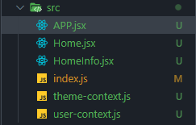 :::
创建 Context
通过React.createContext创建 Context；比如说创建一个主题上下文：
const ThemeContext = React.createContext();通过 Context 中 Provider 属性的 value 属性为后代提供数据
<ThemeContext.Provider value={{ color: "red" }}>
<Home></Home>
</ThemeContext.Provider>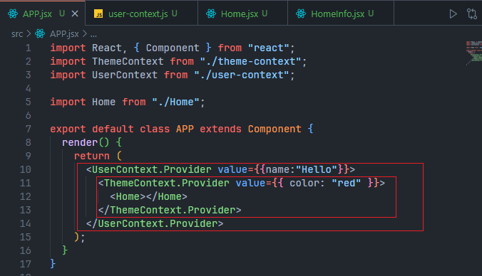
设置组件的 ContextType 为某一个 Context
HomeInfo.contextType = ThemeContext;获取 Context
完整代码：
::: details theme-context.js
一般都会把上下文抽离到单个文件中
import React from "react";
const ThemeContext = React.createContext();
export default ThemeContext;:::
::: details APP.jsx
import React, { Component } from "react";
import ThemeContext from "./theme-context";
import Home from "./Home";
export default class APP extends Component {
render() {
return (
<ThemeContext.Provider value={{ color: "red" }}>
<Home></Home>
</ThemeContext.Provider>
);
}
}:::
::: details Home.jsx
import React, { Component } from "react";
import HomeInfo from "./HomeInfo";
export default class Home extends Component {
render() {
return <HomeInfo></HomeInfo>;
}
}:::
::: details HomeInfo.jsx
import React, { Component } from "react";
import ThemeContext from "./theme-context";
export class HomeInfo extends Component {
render() {
console.log(this.context);
return <div>HomeInfo</div>;
}
}
HomeInfo.contextType = ThemeContext;
export default HomeInfo;:::
函数式组件如何使用 Context
将 HomeInfo.jsx 修改为函数式组件，APP.jsx 和 Home.jsx 不用修改。
ThemeContext 里面有个 Consumer，传入一个回调函数，里面会自动执行这个回调函数并且把 value 传递进来
import React from "react";
import ThemeContext from "./theme-context";
export default function HomeInfo() {
return (
<ThemeContext.Consumer>
{(value) => {
return <h2>{value.color}</h2>;
}}
</ThemeContext.Consumer>
);
}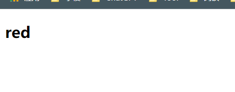
如何使用多个 Context 的数据
在 APP.jsx 中，我们有两个 Context
import React, { Component } from "react";
import ThemeContext from "./theme-context";
import UserContext from "./user-context";
import Home from "./Home";
export default class APP extends Component {
render() {
return (
<UserContext.Provider value={{ name: "Hello" }}>
<ThemeContext.Provider value={{ color: "red" }}>
<Home></Home>
</ThemeContext.Provider>
</UserContext.Provider>
);
}
}Home.jsx 是一个类组件，contextType 属性也只有一个，现在 contextType 的值是 ThemeContext；
如果要使用 UserContext 的值，就只能通过UserContext.Consumer。
import React, { Component } from "react";
import UserContext from "./user-context";
import ThemeContext from "./theme-context";
export class Home extends Component {
render() {
return (
<div>
<h2>ThemeContext:{this.context.color}</h2>
<UserContext.Consumer>
{(value) => {
return <h2>UserContext:{value.name}</h2>;
}}
</UserContext.Consumer>
</div>
);
}
}
Home.contextType = ThemeContext;
export default Home;::: tip
函数式组件也一样，都是通过Context.Consumer来获取多个 Context 的
:::
非父子组件通信 - EventBus
需要安装一个第三方库 hy-event-store
npm i hy-event-store
具体用法还是看 github 上的介绍吧
setState 介绍
为什么使用 setState
开发中我们并不能直接通过修改 state 的值来让界面发生更新：
- 因为我们修改了 state 之后，希望 React 根据最新的 State 来重新渲染界面，但是这种方式的修改 React 并不知道数据发生了变化；
- React 并没有实现类似于 Vue2 中的 Object.defineProperty 或者 Vue3 中的 Proxy 的方式来监听数据的变化（就是说 React 不像 Vue 对数据做了劫持）；
- 我们必须通过 setState 来告知 React 数据已经发生了变化；
组件中的 setState 方法是从 Component 中继承过来的。
setState 的三种不同用法
-
直接传入一个对象
this.setState({ message: "HHH" });::: tip 在内部是通过的
Object.assign对原来的state和传入的对象进行合并的。 :::
-
传入一个回调函数
this.setState((state, props) => { return { message: "HHH", }; });好处：
-
可以直接在函数里面进行数据的逻辑的处理
-
可以获取之前的 state 和 props（内部会不会将它们传递进来），不用再写 this
-
-
传入第二个参数（callback）
如果希望在数据更新后（但此时还未调用 render 函数）立即获取到更新后的 state，那么就可以传入第二个参数(一个回调函数)，这个函数会在更新后立即调用。
this.setState({ message: "HHH" }, () => { console.log(this.state.message); });
setState 异步更新
设置 state 的初始值
this.state = { message: "Hello,world" };调用 setState 进行更新
this.setState({ message: "HHH" });
console.log(this.state.message); // Hello,world更新后立即打印this.state.message，打印的值是 Hello,world 而不是更新后的值 HHH。可见 setState 是异步的操作，我们并不能在执行完 setState 之后立马拿到最新的 state 的结果
为什么 setState 设计为异步
setState 设计为异步其实之前在 GitHub 上也有很多的讨论；React 核心成员（Redux 的作者）Dan Abramov 也有对应的回复，有兴趣的可以参考一下；https://github.com/facebook/react/issues/11527#issuecomment-360199710；
-
setState 设计为异步，可以显著的提升性能；
如果每次调用 setState 都进行一次更新，那么意味着 render 函数会被频繁调用，界面重新渲染，这样效率是很低的；
最好的办法应该是获取到多个更新，之后进行批量更新；
-
如果同步更新了 state，但是还没有执行 render 函数，那么 state 和 props 不能保持同步；state 和 props 不能保持一致性，会在开发中产生很多的问题；
如何获取到更新后的值
-
setState 的回调
setState 接受两个参数：第二个参数是一个回调函数，这个回调函数会在更新后会执行；
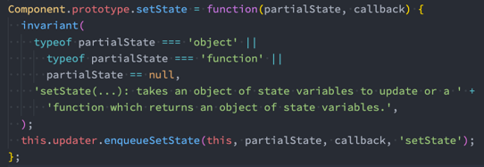
具体使用上面 [setStated 的三种用法中] 已经介绍过了
-
在生命周期函数中获取
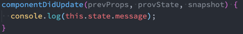
在 React 18 前，setState 不一定都是异步的
::: tip 现在 React 18 的 setState 都是异步的 :::
-
在组件生命周期或 React 合成事件中，setState 是异步；
-
在 setTimeout 或者原生 dom 事件中，setState 是同步；
setTimeout(() => { this.setState({ message: "HHH" }); }, 0);componentDidMount(){ const b = document.getElementById("btn"); b.addEventListener('click',()=>{ this.setState({ message: "HHH" }); }) }
React 18 中 setState 如何同步
import { flushSync } from "react-dom";
// ……
flushSync(() => {
this.setState({ message: "HHH" });
});ref
获取原生 DOM
在 React 的开发模式中，通常情况下不需要、也不建议直接操作 DOM 原生，但是某些特殊的情况，确实需要获取到 DOM 进行某些操作：
- 管理焦点，文本选择或媒体播放；
- 触发强制动画；
- 集成第三方 DOM 库；
使用 document.querySelector 和 document.getElementBy··· 是非常繁琐的，因为使用的时候需要保证 class 和 id 等具有唯一性；在 React 中我们可以通过 ref 获取 DOM；
如何创建 ref ?
-
传入字符串 使用时通过
this.refs.传入的字符串格式获取对应的元素；import React, { PureComponent } from "react"; export class APP extends PureComponent { getNativeDOM() { console.log(this.refs.dom); } render() { return ( <div> <h2 ref="dom">APP</h2> <button onClick={(e) => this.getNativeDOM()}>获取 DOM</button> </div> ); } } export default APP;:::tip 该方法已经废弃，但还是可以使用 :::
-
传入一个对象 对象是通过
React.createRef()方式创建出来的；使用时获取到创建的对象其中有一个
current属性就是对应的元素；import React, { PureComponent, createRef } from "react"; export class APP extends PureComponent { constructor() { super(); this.titleRef = createRef(); } getNativeDOM() { console.log(this.titleRef.current); } render() { return ( <div> <h2 ref={this.titleRef}>APP</h2> <button onClick={(e) => this.getNativeDOM()}>获取 DOM</button> </div> ); } } export default APP; -
传入一个函数 该函数会在 DOM 被挂载时进行回调，这个函数会传入一个元素对象，我们可以自己保存；
使用时，直接拿到之前保存的元素对象即可；
import React, { PureComponent } from "react"; export class APP extends PureComponent { constructor() { super(); this.titleEl = null; } getNativeDOM() { console.log(this.refs.dom); } render() { return ( <div> <h2 ref={(el) => (this.titleEl = el)}>APP</h2> <button onClick={(e) => this.getNativeDOM()}>获取DOM</button> </div> ); } } export default APP;
获取类组件实例
跟获取原生 DOM 一样，在组件上绑定一个 ref 就行
使用this.componentRef.current获取组件实例
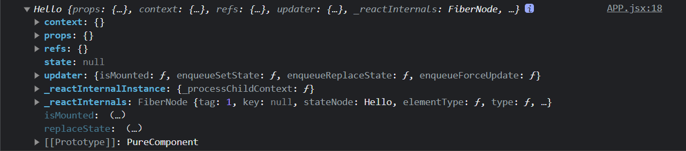
既然都已经获取到了组件实例，那么就可以调用组件实例上的方法，如下面代码中的this.componentRef.current.text()
import React, { PureComponent, createRef } from "react";
class Hello extends PureComponent {
text() {
console.log("text");
}
render() {
return <h2>Hello</h2>;
}
}
export class APP extends PureComponent {
constructor() {
super();
this.componentRef = createRef();
}
getComponent() {
console.log(this.componentRef.current);
this.componentRef.current.text();
}
render() {
return (
<div>
<Hello ref={this.componentRef} />
<button onClick={(e) => this.getComponent()}>获取DOM</button>
</div>
);
}
}
export default APP;获取函数式组件的 DOM
函数式组件是没有实例的，所以无法通过 ref 获取他们的实例：但是某些时候，我们可能想要获取函数式组件中的某个 DOM 元素；这个时候我们可以通过 React.forwardRef ，后面我们也会学习 hooks 中如何使用 ref；
如果在函数式组件中直接传入一个 ref 属性，控制台会报警告。
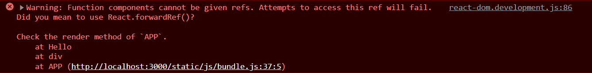
如何使用 forwardRef
import React, { PureComponent, createRef, forwardRef } from "react";
const Hello = forwardRef(function (props, ref) {
return <h2 ref={ref}>Hello</h2>;
});
export class APP extends PureComponent {
constructor() {
super();
this.componentRef = createRef();
}
getComponent() {
console.log(this.componentRef.current);
}
render() {
return (
<div>
<Hello ref={this.componentRef} />
<button onClick={(e) => this.getComponent()}>获取DOM</button>
</div>
);
}
}
export default APP;受控组件和非受控组件
在 HTML 中，表单元素如<input>、<textarea>、<select>等通常自己（浏览器）维护 state，并根据用户输入进行更新。
这里的
state并不是指this.state，而是一个抽象的概念
但在 React 中，可变状态通常保存在组件的 state 属性中，并且只能通过使用 setState() 来更新。
如果我们将React的state作为 <input>、<textarea>等非受控组件的 “唯一数据源”；被 React 以这种方式控制取值的表单输入元素就叫做“受控组件”；
input
现在需要再页面上显示一个输入框，输入框有默认值 Hello，下面是实现代码：
import React, { PureComponent } from "react";
export class APP extends PureComponent {
constructor() {
super();
this.state = {
message: "Hello",
};
}
render() {
return (
<div>
<input type="text" value={this.state.message} />
</div>
);
}
}
export default APP;现在出现一个问题：输入框无法输入。
why？因为我们给 input 添加了 value 属性，这导致 input 从非受控组件变成受控组件，即现在 input 的值只能由代码控制而不能由用户控制。
如果现在想修改 input 的值，则需要添加 onChange
export class APP extends PureComponent {
constructor() {
super();
this.state = {
message: "Hello",
};
}
change(e) {
this.setState({ message: e.target.value });
}
render() {
return (
<div>
<input
type="text"
value={this.state.message}
onChange={(e) => this.change(e)}
/>
</div>
);
}
}checkbox
export default class APP extends PureComponent {
constructor() {
super();
this.state = {
isAgree: true,
};
}
change(e) {
this.setState({ isAgree: e.target.checked });
}
render() {
return (
<div>
<label for="agree">
<input type="checkbox" id="agree" checked={this.state.isAgree} onChange={(e)=>this.change(e)}/>
agree
</label>
</div>
);
}
}select
单选
export default class APP extends PureComponent {
constructor() {
super();
this.state = {
choice: "a",
};
}
change(e) {
this.setState({ choice: e.target.value });
}
render() {
return (
<div>
<select value={this.state.choice} onChange={(e) => this.change(e)}>
<option value="a">a</option>
<option value="b">b</option>
<option value="c">c</option>
</select>
</div>
);
}
}多选
export default class APP extends PureComponent {
constructor() {
super();
this.state = {
choice: ["a"],
};
}
change(e) {
const values = Array.from(e.target.selectedOptions, (item) => item.value);
this.setState({ choice: values });
}
render() {
return (
<div>
<select
multiple
value={this.state.choice}
onChange={(e) => this.change(e)}
>
<option value="a">aaaaaaaaaaa</option>
<option value="b">bbbbbbbbbbb</option>
<option value="c">ccccccccccc</option>
</select>
</div>
);
}
}高阶组件
::: info 高阶函数
至少满足以下条件之一：
- 接受一个或多个函数作为输入；
- 输出一个函数；
JS中的filter、map、reduce都是高阶函数。
:::
定义
高阶组件(Higher-Order Components)，简称为 HOC；
- 高阶组件本身不是一个组件，而是一个函数；
- 参数是一个组件，返回值也是一个组件；
function hoc(Component) {
class NewComponent extends PureComponent {
render(){
return <Component />
}
}
return NewComponent;
}::: tip
高阶组件并不是React API的一部分，它是基于React的组合特性而形成的设计模式
:::
高阶组件在一些React第三方库中非常常见：如redux中的connect和react-router中的withRouter。
props的增强
添加新的props
import { PureComponent } from "react";
function enhancedInfo(OriginComponent) {
class NewComponent extends PureComponent {
constructor() {
super();
this.state = {
info: {
name: "hi",
level: 100,
},
};
}
render() {
return <OriginComponent {...this.state.info} />;
}
}
return NewComponent;
}
const Hello = enhancedInfo(function (props) {
return <h1>{props.name},{props.level}</h1>;
});
export default class APP extends PureComponent {
render() {
return <Hello />;
}
}共享Context
import { PureComponent, createContext } from "react";
const ThemeContext = createContext();
export default class APP extends PureComponent {
render() {
return (
<ThemeContext.Provider value={{ color: "red" }}>
<Info1 />
<Info2></Info2>
</ThemeContext.Provider>
);
}
}
// 直接使用Context
class Info1 extends PureComponent {
render() {
return (
<ThemeContext.Consumer>
{(value) => {
return <h1>{value.color}</h1>;
}}
</ThemeContext.Consumer>
);
}
}
// 通过高阶组件使用Context
function withTheme(OriginComponent) {
return (props) => {
return (
<ThemeContext.Consumer>
{(value) => {
return <OriginComponent {...value} {...props} />;
}}
</ThemeContext.Consumer>
);
};
}
const Info2 = withTheme(function (props) {
return <h1>{props.color}</h1>;
});渲染判断鉴权
import { PureComponent } from "react";
function loginAuth(OriginComponent) {
return (props) => {
if (true) {
return <OriginComponent {...props} />;
} else {
return <h1>登录</h1>;
}
};
}
const Info = loginAuth(function () {
return <h1>info</h1>;
});
export default class APP extends PureComponent {
constructor() {
super();
this.state = {
login: false,
};
}
render() {
return <Info />;
}
}生命周期劫持
import { PureComponent } from "react";
function logRenderTime(OriginComponent) {
return class extends PureComponent {
UNSAFE_componentWillMount() {
this.start = new Date().getTime();
}
componentDidMount() {
this.end = new Date().getTime();
// 打印渲染时间
console.log(this.end - this.start);
}
render() {
return <OriginComponent />;
}
};
}
const Info = logRenderTime(function () {
return <h1>info</h1>;
});
export default class APP extends PureComponent {
render() {
return <Info />;
}
}Portals
某些情况下，我们希望渲染的内容独立于父组件，甚至是独立于当前挂载到的DOM元素中（默认都是挂载到id为root的DOM元素上的）。
Portal 可以将子节点渲染到存在于父组件以外的 DOM 节点：
- 第一个参数：任何可渲染的 React 子元素；
- 第二个参数：一个 DOM 元素；
import { PureComponent } from "react";
import { createPortal } from "react-dom";
export default class APP extends PureComponent {
render() {
return (
<div>
<h1>root</h1>
{createPortal(<h1>other</h1>, document.querySelector("#other"))}
</div>
);
}
}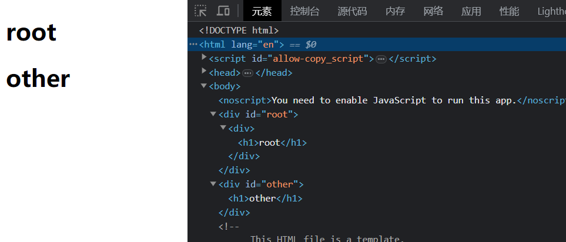
fragment
在之前的开发中，一个组件中返回内容时总是包裹一个div元素，而这个div又没有实际意义。我们可以使用Fragment代替这个div，根vue的template相似。
Fragment 允许你将子列表分组，而无需向 DOM 添加额外节点；
import { PureComponent, Fragment } from "react";
export default class APP extends PureComponent {
render() {
return (
<Fragment>
<h1>Hi</h1>
</Fragment>
);
}
}React还提供了Fragment的语法糖
import { PureComponent } from "react";
export default class APP extends PureComponent {
render() {
return (
<>
<h1>Hi</h1>
</>
);
}
}但是，如果我们需要在Fragment中添加key，那么就不能使用短语法
StrictMode
StrictMode 是一个用来突出显示应用程序中潜在问题的工具：
- 与 Fragment 一样，StrictMode 不会渲染任何可见的 UI；
- 它为其后代元素触发额外的检查和警告；
- 严格模式检查仅在开发模式下运行，不会影响生产构建；
import React, { PureComponent } from "react";
export default class APP extends PureComponent {
render() {
return (
<React.StrictMode>
<h1>Hi</h1>
</React.StrictMode>
);
}
}StrictMode 可以检测什么
-
识别不安全的生命周期
-
使用过时的ref API
-
检查意外的副作用
组件会被调用两次；这是严格模式下故意进行的操作，让你来查看在这里写的一些逻辑代码被调用多次时，是否会产生一些副作用； 在生产环境中，是不会被调用两次的；
在控制台中，第一行显示的是第一次调用的输出，第二行显示的是第二次调用的输出，用灰色显示与第一次区别开来（如果没有安装react插件则没有这种颜色区别）。
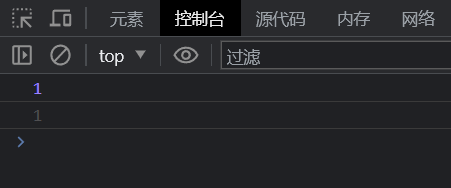
-
使用废弃的findDOMNode方法
-
检测过时的context API